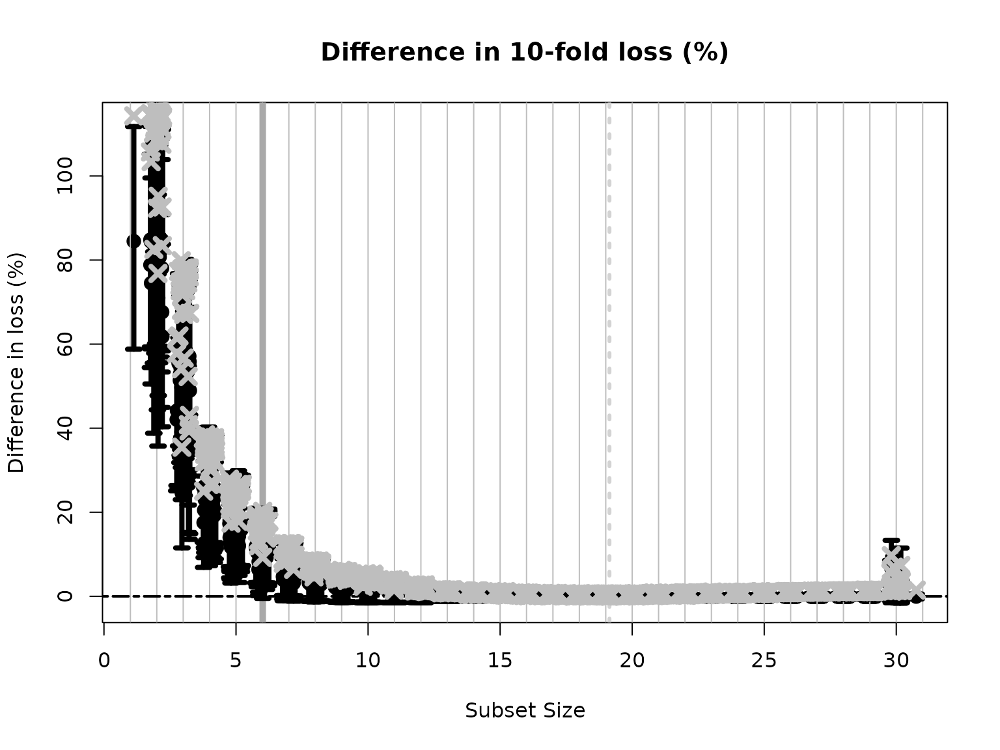

Overview
Subset selection is a valuable tool for interpretable learning, scientific discovery, and data compression. Given an outcome \(y\) and \((n \times p)\) covariates \(X\), the general goal is to find the subset of covariates (i.e., columns of \(X\)) that “best” predict \(y\), and to estimate the corresponding regression coefficients.
In recent years, subset selection has declined in popularity for several reasons:
Selection instability: it is very common to obtain completely different “best” subsets under minor perturbations of the data;
Lack of regularization: once a “best” subset has been identified, the coefficients are estimated using ordinary least squares (OLS)—which is inadvisable when the subset is moderate/large and the covariates are correlated, since it can induce variance-inflation; and
Computational bottlenecks: an exhaustive search must consider \(2^p\) subsets, which becomes prohibitive for \(p > 30\).
As a result, frequentists have pursued penalized regression (e.g., the lasso), but also commonly select variables based on p-values (e.g., p-values \(< 0.05\))—although this is not typically referred to as “selection” explicitly. Similarly, Bayesian methods predominantly consider marginal selection, for example using posterior inclusion probabilities (e.g., from spike-and-slab priors) or based on credible intervals that exclude zero. However, marginal selection is unsatisfactory—we prefer to interpret any subset as a joint collection of variables—and empirically inferior, with substantially less power to detect true effects (Kowal 2021, 2022a, 2022b).
BayesSubsets seeks to reinvigorate (Bayesian) subset
selection. Given any Bayesian regression model \(M\) that predicts \(y\) from \(X\), we provide:
Optimal linear coefficients for any subset of variables, which produces a useful and interpretable summary of \(M\) (which may be complex/nonlinear);
Regularization (i.e., shrinkage) for these coefficients, which is inherited from \(M\) and helps guard against variance-inflation;
Uncertainty quantification for these coefficients, again leveraging \(M\);
The acceptable family of “near-optimal” subsets of linear predictors that match or nearly match the “best” (by minimum cross-validated error) subset; and
Summaries of the acceptable family, including the 1) smallest acceptable subset and 2) a variable importance metrics that computes, for each variable \(j\), the proportion of acceptable subsets in which \(j\) appears.
In aggregate, these features address the limitations of (classical) subset selection and provide a coherent Bayesian alternative anchored in decision analysis.
A main contribution of BayesSubsets is the computation
and summarization of the acceptable family, which deemphasizes the role
of a single “best” subset and instead advances the broader perspective
that often many subsets are highly competitive. This is especially true
for datasets with correlated predictors, low signal-to-noise, and small
sample sizes. As a result, the acceptable family counteracts the
selection instability that has traditionally afflicted (classical)
subset selection.
Using BayesSubsets
Getting started
We begin by installing and loading the package:
# devtools::install_github("drkowal/BayesSubsets")
library(BayesSubsets)For this example, we will consider simulated data with correlated covariates \(X\) and a continuous outcome \(y \in \mathbb{R}\):
# To reproduce:
set.seed(123)
# Simulate some data:
dat = simulate_lm(n = 200, # number of observations
p = 30, # number of predictors
p_sig = 5, # number of true signals
SNR = 1 # signal-to-noise ratio
)
# Store the data:
y = dat$y; X = dat$XFitting the regression model
The first step is to fit a Bayesian regression model. Here, we will use a linear model with horseshoe priors:
library(bayeslm)
# Fit the Bayesian regression model:
fit = bayeslm(y ~ X[,-1], # intercept already included
prior = 'horseshoe', # prior on regression coefficients
N = 10000, # MCMC samples to save
burnin = 5000 # initial samples to discard
)
#> horseshoe prior
#> fixed running time 0.00444005
#> sampling time 0.804864Computing optimal linear coefficients
Given any Bayesian regression model \(M\) and any subset of covariates \(S\), we compute the optimal linear coefficients according to Bayesian decision analysis. Kowal (2021) showed that this is obtained simply by projecting the fitted values \(\hat y\) from \(M\) onto \(X_S\), i.e., the covariate matrix \(X\) restricted to the columns selected in \(S\). For an example subset \(S = \{1,3,10\}\) and squared error loss, the following code computes our optimal linear summary:
# Example subset:
S_ex = c(1, 3, 10)
# Optimal coefficients:
get_coefs(y_hat = fitted(fit),
XX = X[,S_ex])
#> X1 X3 X10
#> -0.8863355 0.4474228 -0.5731277We emphasize two key points, First, this is not the same as classical linear regression with \(y\) and \(X\). To see this, recall that under \(M\), the fitted values are \(\hat y = X \hat \beta\), where \(\hat \beta\) is the posterior expectation of the regression coefficients from the Bayesian linear model. The horseshoe prior on \(\beta\) should shrink many of these coefficients toward zero, which propagates regularization to the optimal coefficients in the projection above. Thus, our “fit-to-the-fit” resolves a key criticism of (classical) subset selection.
Second, this is not a two-stage estimator in the classical sense, where plug-in estimates from a stage-one model are plugged in for an unknown parameter in a stage-two model. Instead, this is a fully coherent decision analysis designed obtain a certain type of point estimate—just like a posterior mean or a posterior median. For example, the optimal coefficients for the full set of covariates \(S = \{1,\ldots,p\}\) are simply \(\hat \beta\)—the usual posterior mean under \(M\). But these linear summaries are more broad: they can be computed to summarize any Bayesian regression model \(M\) (not just linear models) for any subset of covariates \(S\).
Uncertainty quantification for the linear coefficients
We may also obtain posterior uncertainty quantification for the linear coefficients that are active (nonzero) in \(S\). To do so, we project the posterior predictive distribution onto \(X_S\) draw-by-draw, which induces a posterior predictive distribution for the linear coefficients under the model \(M\)—even though \(M\) need not be linear in general.
These predictive draws are not automatically output by
bayeslm, so we run the following code to sample them. We
also compute the log-predictive densities which will later be used in
predictive cross-validation.
# Extract the posterior predictive draws and lpd:
temp = post_predict(post_y_hat = tcrossprod(fit$beta, X),
post_sigma = fit$sigma,
yy = y)
post_y_pred = temp$post_y_pred
post_lpd = temp$post_lpdNow, we can obtain posterior predictive samples of the linear coefficients in \(S\), and summarize those posteriors using 95% credible intervals.
# Posterior predictive draws of *all* coefficients:
post_beta_s = proj_posterior(post_y_pred = post_y_pred,
XX = X,
sub_x = S_ex)
dim(post_beta_s) # the coefficients outside S_ex are fixed at zero
#> [1] 10000 31
# Compute 95% credible intervals for the nonzero entries:
t(apply(post_beta_s[,S_ex], 2,
quantile, c(0.05/2, 1 - 0.05/2)))
#> 2.5% 97.5%
#> X1 -1.30024730 -0.4645863
#> X3 -0.01006303 0.9018901
#> X10 -1.00739359 -0.1385361Bayesian subset search
To this point, we have focused on point and interval (linear)
summaries for an arbitrary yet fixed subset \(S\). However, we are often interested in
searching across subsets and measuring the predictive
performances. Here, we use the model \(M\) output to generate a collection of
“candidate subsets” using decision analysis (Kowal, 2022a). For
small \(p\) it may be possible to
enumerate all possible subsets. Here, we screen to the “best”
n_best = 50 models of each size according to squared error
loss. We store these in a Boolean matrix indicators: each
row is an individual subset, while the columns indicate which variables
are included (TRUE) or excluded (FALSE).
indicators = branch_and_bound(yy = fitted(fit), # response is the fitted values
XX = X, # covariates
n_best = 50 # restrict to the "best" 50 subsets of each size
)
# Inspect:
indicators[1:5, 1:10]
#> X1 X2 X3 X4 X5 X6 X7 X8 X9 X10
#> force_in TRUE FALSE FALSE FALSE FALSE FALSE FALSE FALSE FALSE FALSE
#> TRUE TRUE FALSE FALSE FALSE FALSE FALSE FALSE FALSE FALSE
#> TRUE FALSE FALSE TRUE FALSE FALSE FALSE FALSE FALSE FALSE
#> TRUE FALSE FALSE FALSE FALSE FALSE FALSE FALSE FALSE FALSE
#> TRUE FALSE FALSE FALSE FALSE FALSE FALSE FALSE FALSE FALSE
# Dimensions:
dim(indicators)
#> [1] 1412 31
# Summarize the model sizes:
table(rowSums(indicators)) # note: intercept always included
#>
#> 1 2 3 4 5 6 7 8 9 10 11 12 13 14 15 16 17 18 19 20 21 22 23 24 25 26
#> 1 30 50 50 50 50 50 50 50 50 50 50 50 50 50 50 50 50 50 50 50 50 50 50 50 50
#> 27 28 29 30 31
#> 50 50 50 30 1When \(p \gg 30\), it is recommended
to use the prescreen function, which restricts the search
to include only num_to_keep possible active variables. This
makes the branch-and-bound algorithm feasible for very large \(p\).
The acceptable family of “near-optimal” subsets
From this large collection of 1412 candidate subsets, we seek to filter to the acceptable family of subsets, i.e., those “near-optimal” subsets that predict about as well as the “best” subset. These are computed based on 10-fold cross-validation, and use the out-of-sample predictive distribution from \(M\) to provide uncertainty quantification for predictive accuracy.
# Compute the acceptable family:
accept_info = accept_family(post_y_pred = post_y_pred,
post_lpd = post_lpd,
XX = X,
indicators = indicators,
yy = y,
post_y_hat = tcrossprod(fit$beta, X))
# How many subsets are in the acceptable family?
length(accept_info$all_accept)
#> [1] 1163
# These are the rows of `indicators` that belong to the acceptable family:
head(accept_info$all_accept)
#> [1] 182 232 233 234 235 236
# An example acceptable subset:
ex_accept = accept_info$all_accept[1]
which(indicators[ex_accept,])
#> X1 X2 X3 X4 X5 X6
#> 1 2 3 4 5 6The plot shows how the out-of-sample predictive performance varies across subsets of different sizes, specifically relative (% change) to the “best” subset (by minimum cross-validated error; dashed gray vertical line). The x-marks are the (usual) empirical cross-validated error, while the intervals leverage the predictive distribution from \(M\) to quantify uncertainty in the out-of-sample predictive performance. While performance improves as variables are added, it is clear that several smaller subsets are highly competitive—especially when accounting for the predictive uncertainty.
Subset selection: the smallest acceptable subset
If we wish to select a single subset, a compelling representative of the acceptable family is the smallest acceptable subset. This choice favors parsimony, while its membership in the acceptable family implies that it meets a high standard for predictive accuracy. From the previous plot, we select the smallest subset for which the intervals include zero (solid gray vertical line).
# Simplest acceptable subset:
beta_hat_small = accept_info$beta_hat_small
# Which coefficients are nonzero:
S_small = which(beta_hat_small != 0)
# How many coefficients are nonzero:
length(S_small)
#> [1] 6The “best” subset by minimum cross-validation often includes many extraneous variables, which is a well-known (and undesirable) byproduct of cross-validation.
# Acceptable subset that minimizes CV error:
beta_hat_min = accept_info$beta_hat_min
# Typically much larger (and often too large...)
sum(beta_hat_min != 0)
#> [1] 19For reference, the true model size is 6. Clearly, the “best” subset is unsatisfactory.
Returning to the smallest acceptable subset, we can obtain posterior samples and credible intervals for the coefficients as before:
# Draws from the posterior predictive distribution
post_beta_small = proj_posterior(post_y_pred = post_y_pred,
XX = X,
sub_x = S_small)
# Compute 95% credible intervals for the nonzero entries:
t(apply(post_beta_small[,S_small], 2,
quantile, c(0.05/2, 1 - 0.05/2)))
#> 2.5% 97.5%
#> X1 -1.4434868 -0.6028323
#> X2 0.3398519 1.6808732
#> X3 0.3738225 1.3484581
#> X4 0.1798377 1.5472092
#> X5 -1.6691666 -0.5500480
#> X6 -1.4600657 -0.2625247Variable importance from acceptable subsets
Another useful summary of the acceptable family is the variable importance, which reports, for each variable \(j\), the proportion of acceptable subsets in which \(j\) appears. We are particularly interested in distinguishing among those variables that occur in all, some, or no acceptable subsets, which provides insight about which variables are indispensable (“keystone covariates”) and which variables are part of a “predictively plausible” explanation.
# Variable importance: proportion of *acceptable subsets* in which each variable appears
vi_e = var_imp(indicators = indicators,
all_accept = accept_info$all_accept)$vi_inc
# "Keystone covariates" that appear in *all* acceptable families:
which(vi_e == 1)
#> 1 4
#> 1 4
# Irrelevant covariates that appear in *no* acceptable families:
which(vi_e == 0)
#> named integer(0)
# Visualize:
barplot(vi_e[order(vi_e, (ncol(X):1))], # order...
horiz = TRUE,
main = paste('Variable importance for the acceptable family'))
abline(v = 1)We can see that quite a few variables appear in almost all acceptable subsets: there are 6 variables that belong to at least 95% of the acceptable subsets. There are also 6 variables that belong to fewer than 20% of the acceptable subsets. Note that the covariates are highly correlated in this simulated example (and \(p\) is moderate), so it is reasonable to expect that many covariates are roughly interchangeable in terms of predictive accuracy.
Comparing with traditional posterior summaries
Typically, Bayesian linear regression would report the posterior expectations and 95% posterior credible intervals of the regression coefficients \(\beta\). We plot these together with the point and interval estimates for the smallest acceptable model:
The traditional model summaries are completely dense: the point estimates \(\hat \beta\) are nonzero for all covariates. By comparison, the point estimates from the smallest acceptable subset are sparse, with only 6 active coefficients. By design, the smallest acceptable subset only reports interval estimates for these active coefficients. In this example, the intervals are narrower for the smallest acceptable subset, while the traditional intervals produce large intervals even for the truly zero coefficients.
Finally, we verify the predictive accuracy to recover the true regression surface, \(X\beta_{true}\):
# RMSE from posterior mean:
sqrt(mean((dat$Ey_true - X%*%beta_hat)^2))
#> [1] 0.5382842
# RMSE from smallest acceptable subset:
sqrt(mean((dat$Ey_true - X%*%beta_hat_small)^2))
#> [1] 0.1924557Here, the smallest acceptable subset is an exceptional predictor. However, keep in mind that it is optimized for near-optimal predictive accuracy along with simplicity (sparsity). This is often a potent combination, but we make no claims that it will uniformly outperform other members of the acceptable family.
Conclusion
We have sought to demonstrate that BayesSubsets is a
useful accompaniment to the usual Bayesian regression workflow. Given
any Bayesian regression model \(M\), we
have shown how to compute
Optimal linear summaries for any subset of covariates;
Accompanying uncertainty quantification via posterior (predictive) distributions and intervals;
Bayesian subset search using decision analysis;
The acceptable family of near-optimal subsets; and
Key summaries of the acceptable family, including the smallest acceptable subset and a variable importance metric.
When a single subset is required and parsimony is valued, then we recommend the smallest acceptable subset. However, we caution against the overreliance on any single subset without compelling motivation. A key contribution of the acceptable family is that it identifies many competing explanations (subsets) that are nearly indistinguishable in predictive accuracy. From a purely predictive perspective, we cannot completely rule out any member of the acceptable family. Thus, we further recommend reporting the variable importance as a default, variable-specific summary of the acceptable family.